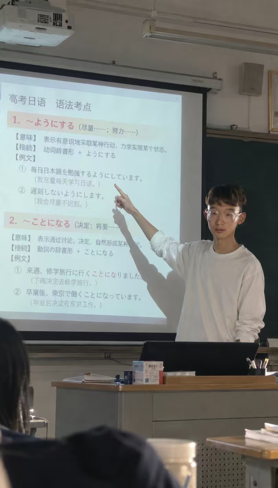
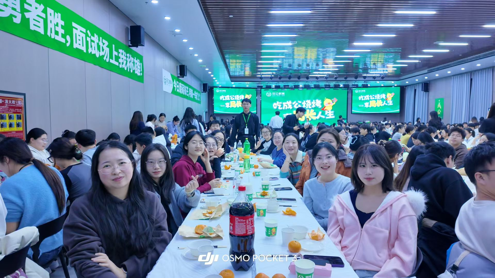

开源项目
LearnFlow
一个从自身需求长出来的学习教练。
从公考备考到《社会心理学》阅读，我把诊断、练习、复测和学习记录整理成可复用的 Skill，让“好像懂了”有机会变成“自己能讲清楚”。
理解是一个过程
先用一个小任务了解基础，把时间花在真正需要学习的地方。
你好，欢迎来我的一小片互联网
有教学经历，也在探索 AI 与内容创作。
我喜欢从真实问题出发，尝试、做出来，
再把有用的经验留下。
一些已经开始的事
我做了什么，为什么这样做，
以及过程中学到了什么。
一个从自身需求长出来的学习教练。
从公考备考到《社会心理学》阅读，我把诊断、练习、复测和学习记录整理成可复用的 Skill，让“好像懂了”有机会变成“自己能讲清楚”。
先用一个小任务了解基础，把时间花在真正需要学习的地方。
把选题、脚本、拍摄、剪辑与复盘串起来，用 AI 辅助执行，也保留自己的表达与判断。


日语教学里梳理语法与真题，成公面试教学中组织答题训练与反馈。在两种课堂里，练习把知识变成对方能理解、能运用的表达。
内容之外，也看见运营
参与账号运营，
在内容与反馈中积累经验。
慢慢形成自己的方法
工具会变，问题也会变。
我更在意一件事是怎样被推进的。
先确认想解决的问题，再把它拆成可以执行的小步骤。
亲自使用、检查输出，发现偏差后，把要求说得更具体。
把流程、提示词和关键参数归档，让下一次从更好的地方开始。
屏幕背后的这个人
从自己的学习问题开始
学过以后，
真的会了吗？
让学习留下可检验的掌握证据。
你好，我是宋可乐。
一个喜欢追问，也在练习行动的人。
日语本科毕业，做过高中日语教学、公考面试讲解，也有基层工作和现场服务经历。这些经历让我越来越在意：对方真正需要的是什么，以及怎样把事情说明白、推进下去。
工作与学习之外，我用 AI 尝试做工具、做内容，把零散的经验整理成自己的方法。阅读、运动和旅行，也让我记得把目光从屏幕移回真实的生活。
“在写最后这句话的时候，
宋可乐好像比之前厉害了那么一点点。”摘自我的日记，2026.10.16
日语本科
高中日语教学与辅导
公考面试讲解
基层工作与个人项目
给探索留一个位置
更新于 2026.10.16
LearnFlow 已发布 v1.3.0，继续完善资料整理、学习记录与成果输出。
从满意的成片中整理提示词、术语和参数，把一次尝试变成下次的起点。
在口播内容中尝试 AI 辅助剪辑，根据实际输出调整需求与制作流程。
很高兴，在这里遇见你。
如果你也在探索 AI 应用、学习工具或内容创作，
欢迎从我的项目开始认识我。